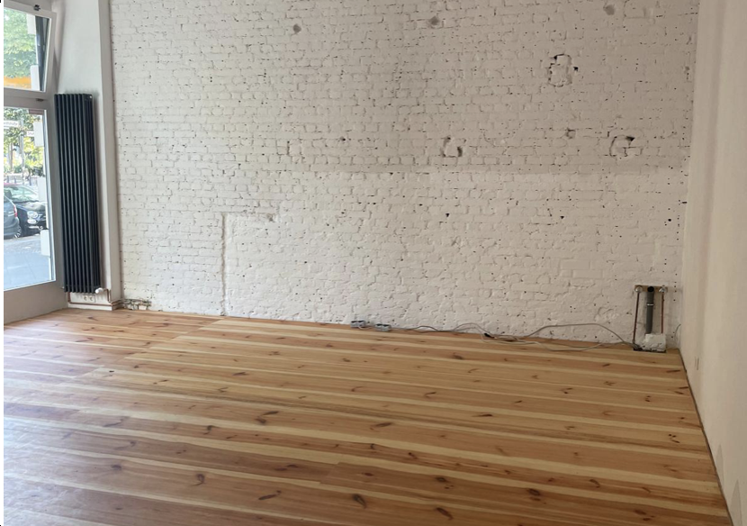
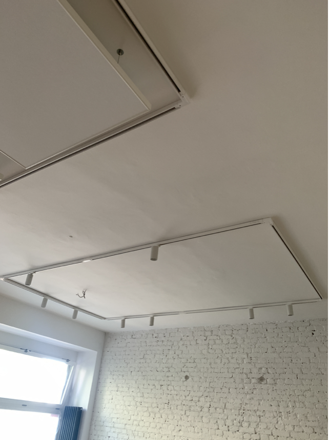

Bildergalerie
 

Leonhardtstraße 25
14057 Berlin
Inmitten einer belebten Einkaufsstraße mit charmantem Kiezflair in Berlin-Charlottenburg erwartet Sie diese vielseitig nutzbare Gewerbefläche in einem stilvollen Altbau. Ob Ladenlokal, Büro, Galerie oder Teilgastronomie – hier sind Ihrer Kreativität kaum Grenzen gesetzt.
Auf ca. 84 m² überzeugt das Objekt mit einem großzügigen Schnitt, der flexible Nutzungsmöglichkeiten bietet. Die großen Schaufenster zur Straße sorgen nicht nur für viel Tageslicht, sondern auch für maximale Sichtbarkeit – ideal für Laufkundschaft und Markenpräsenz.
Interessiert?
Gerne stehen wir für Rückfragen und Besichtigungstermine zur Verfügung.
Kontaktieren Sie uns einfach – wir freuen uns auf Ihre Anfrage!